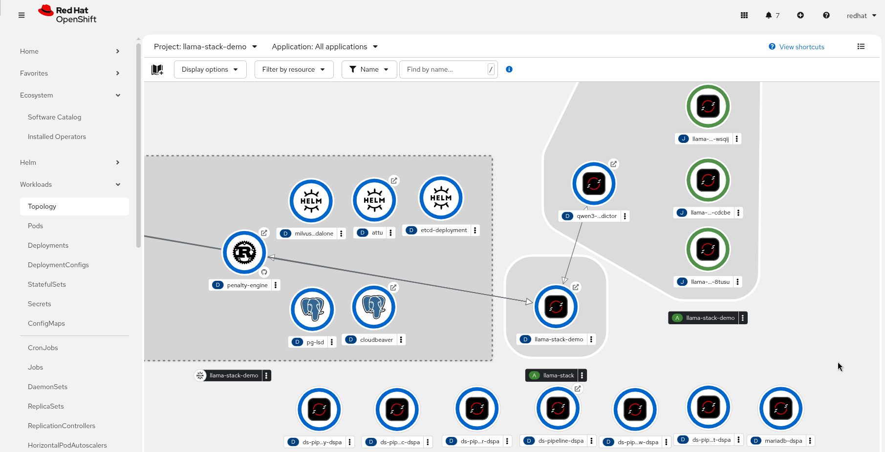

4. Desplegar la Distribución de Llama Stack
4.1 ¿Qué es Llama Stack?
Llama Stack es un framework open-source para desplegar agentes propuesto por Meta. En lugar de que cada desarrollador tenga que reinventar la rueda" cada vez que quiere construir un agente, Llama Stack dispone de un conjunto de APIs y especificaciones estandarizadas que permiten que diferentes componentes de software hablen el mismo idioma.
Llama Stack integra la inferencia de modelos, la generación de embeddings y el almacenamiento vectorial en un único stack optimizado para RAG y los flujos de trabajo de IA basados en agentes.
En OpenShift, el Llama Stack Operator gestiona el ciclo de vida del despliegue de estos componentes, garantizando la escalabilidad, la coherencia y la integración con los proyectos de OpenShift AI.
¿Cómo se implementa Llama Stack? Vamos a echar un vistazo a los tres elementos esenciales:
-
Llama Stack Operator: Instala y gestiona instancias del servidor Llama Stack en OpenShift AI, encargándose de las operaciones del ciclo de vida, tales como el despliegue, el escalado y las actualizaciones.
-
Archivo run.yaml: Define qué APIs están habilitadas y cómo se configuran los proveedores de backend para un servidor de Llama Stack. Red Hat incluye un
run.yamlpor defecto que admite los escenarios de despliegue comunes. Puedes proporcionar unrun.yamlpersonalizado para habilitar flujos de trabajo avanzados o integrar proveedores adicionales. -
El Custom Resource LlamaStackDistribution: Declara la configuración de ejecución para un servidor de Llama Stack, incluyendo los proveedores de modelos, la configuración de embeddings, el almacenamiento vectorial y los ajustes de persistencia.
4.2 Desplegar Llama Stack
Para entornos de producción o desarrollo avanzado en OpenShift AI, la gestión manual de manifiestos YAML puede volverse tediosa. Por ello, vamos a utilizar Helm Charts para orquestar nuestra distribución.
Volvemos a la pestaña de nuestro espacio de trabajo, el IDE. Vamos a desplegar una primera versión de nuestro Llama Stack.
helm install llama-stack-demo helm/ --namespace ${PROJECT} --timeout 20mUna vez ejecutado el comando, ve a la consola de OpenShift. En la barra lateral, selecciona Topology. Deberías ver todos los elementos que hemos desplegado:

La arquitectura que hemos desplegado dispone de lo siguiente:
-
A
-
B
-
C
-
D
-
E
4.3 Ingestión de documentos para RAG
La Helm chart que hemos desplegado incorpora de automaticaciones para hacer RAG. Partimos de unos documentos legales ficticios disponibles en el IDE. Estos documentos son troceados y guardados en la base de datos vectorial. La distribución de Llama Stack que hemos desplegado incorpora un modelo de embedding, necesario para realizar la búsqueda y retrieval de información de esa base de datos.